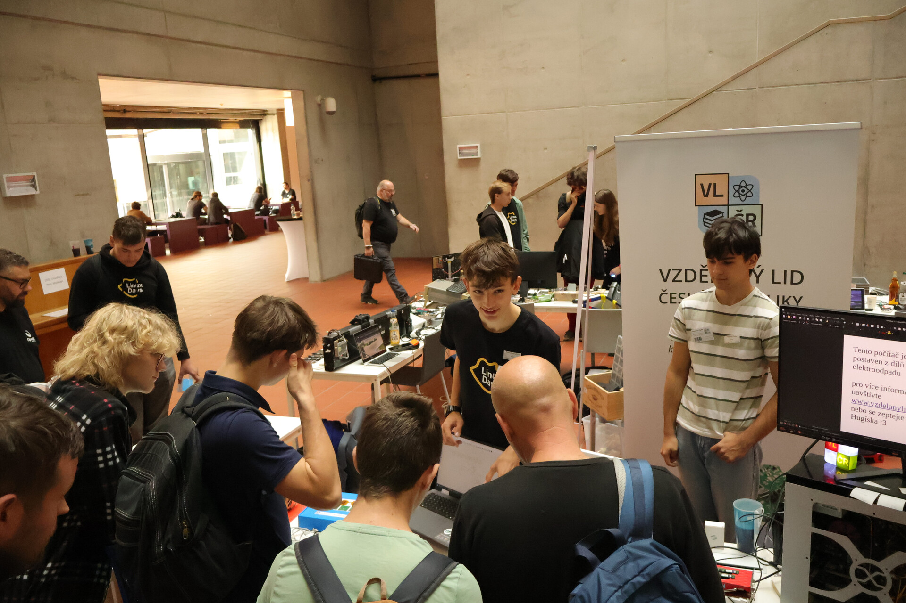

Novinky

VLČR na LinuxDays 2026
05. 10. 2026
Naše studentská iniciativa VLČR se zúčastnila prestižní konference LinuxDays 2026 na FIT ČVUT. Návštěvníkům jsme představili chytrý koš s AI, roboty, počítač z vyřazených dílů i digitizér pro pasivní stylus.

Úspěch na VědaFestu 2026
26. 06. 2026
Studentská iniciativa VLČR se poprvé zúčastnila festivalu VědaFest. Široké veřejnosti i odborníkům představila své technologické projekty, jako je inteligentní odpadkový koš s AI nebo autonomní robot.

Prestižní ocenění pro Lukáše Horáka
29. 05. 2026
Městská část Praha 6 udělila zakládajícímu členovi VLČR Lukáši Horákovi prestižní titul Úspěšný žák. Komise ocenila jeho dlouhodobou spolupráci s FEL a FJFI ČVUT i jeho přínos pro rozvoj vzdělávání skrze naši iniciativu.

Battlebots na Maker Faire
14. 05. 2026
Zakládající členové VLČR se zúčastnili turnaje Battlebots na pražském Maker Faire. I přes fatální selhání elektroniky těsně před startem dokázali improvizovat a nasadit do boje robota ovládaného televizním ovladačem.

Inteligentní třídění odpadu
28. 04. 2026
Členové VLČR vyvinuli prototyp chytrého odpadkového koše s umělou inteligencí pro soutěž Samsung Solve for Tomorrow. Zařízení postavené na platformě ESP32 dokáže samo rozeznat a správně roztřídí vhazovaný odpad.

Jaderné setkání
03. 02. 2026
Jaderné setkání VLČR proběhlo na FJFI ČVUT za účasti studentů se zájmem o fyziku a jadernou energetiku. Akce nabídla jedinečný pohled do prostředí jaderné fakulty a ukázala rostoucí zájem mladé generace o technické obory.

Článek na FEL ČVUT
30. 11. 2025
O zakládajících členech VLČR, Lukáši Horákovi a Hugovi Albrechtovi, vyšel článek na webu Fakulty elektrotechnické ČVUT. Text popisuje jejich účast na Fyzikálních čtvrtcích i jejich zájem o fyziku, techniku a vlastní projekty.

Spolupráce ČEZ a VLČR
23. 11. 2025
České energetické závody dlouhodobě udržují přátelský a partnerský vztah se studentskou skupinou Vzdělaný lid České republiky (VLČR). Tato spolupráce se nejvíce projevuje v rámci pravidelných Fyzikálních čtvrtků, které přinášejí studentům možnost setkávat se s odborníky z praxe, rozšiřovat své znalosti a nahlížet do světa moderní energetiky.

VLČR na ZŠ Pod Marjánkou
28. 03. 2025
VLČR v měsíci únoru navštívilo základní školu Pod Marjánkou. Cílem návštěvy bylo přiblížit žáky s moderní technikou mikropočítačů. Náš člen Lukáš Horák si připravil přednášku o mikropočítači Arduino. Žáci dostali možnost si počítači naprogramovat a zapojit do jednoduchého obvodu.